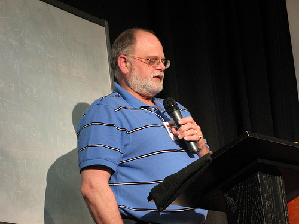

Check Out Our YouTube Debut
Best of Orphans 6 Slideshow
Courtesy of Priyanjali Sen
Best of Orphans 6 Slideshow
Courtesy of Priyanjali Sen
So we have reached the end of phase one of our blog project. We have dutifully recorded the 6th Orphan Film Symposium in all its enchanting, outlandish, poignant, and joyous moments. Helen Hill’s inspired legacy, Tattoo the indefatigable, and Sam’s camera won’t soon be forgotten. We have learned so much as curators and participants over the past four months that it feels strange to move on. By all accounts, Orphans was a huge success this year even with the significant New York relocation. We are proud to have been part of this momentous occasion, and we hope the blog offers virtual treasures for subsequent students, scholars, and practitioners. The future of this home is in your hands, and we only ask that you treat it as a forum for ideas that innovate, challenge, and edify in the spirit of Orphans! See you in two years…
The success of Orphans 6 was due in large part to the dedication and hard work of Dan Streible's "Curating the Moving Image" class. Being the student blog, we would like to honor the behind-the-scenes efforts of our colleagues. May these short biographies help guide future generations of orphanistas and, in a small way, contribute to even greater success in years to come.
Second-year MIAP student, Ben Moskowitz, filmed Orphans 6 and is currently producing a short video documenting the symposium.

Daniela Bajar is an MA Cinema Studies student originally from Argentina. She was in charge of press during Orphans 6. She also established contact with speakers of Spanish speaking countries and helped translate Spanish films into English.
Gabriella Hiatt served as a faithful blog contributor during the symposium. She also helped create the "welcome kits" handed out to fellow orphanistas and coordinated the multimedia presentation during Thursday night's dinner reception at Judson Memorial Church.

Jennifer Pondo collaborated with students from NYU's Film Scoring program to provide soundtracks for the newly restored La Venganza de Pancho Villa and the 1968 NYU surveillance film.
Kathleen Maguire dutifully manning registration tables during Orphans 6. She also gave a presentation with fellow MIAP student, Leah Churner, on the Bob Parent Collection at Anthology Film Archives.

Leah Churner hails from Texas and is a graduate of the MIAP Program. At the symposium, she and Kathleen Maguire spoke about the Bob Parent Collection at Anthology Film Archives, and the problems with preserving unedited amateur films. She also helped out behind the scenes.

Lisa Fehsenfeld worked on administrative duties in preparation for Orphans 6, including recruiting and organizing volunteers. She also spoke with Yvonne Ng on The Story of Hackettstown, screened on Saturday night.
A soon-to-be NYU MIAP graduate, Miwa Yokoyama fundraised for Orphans 6 by soliciting in-kind donations, sponsorships, and fine swag. Not afraid of grunt work, she also helped Dr. Charles Leary with the preparation of registration materials and name tags. She is currently working on an audio archiving project of Orphans 6, with fellow classmate Yvonne Ng, to make portions of the symposium accessible online.
Nicole Martin helped design the stylish (and free) Orphan 6 t-shirts and constructed the helpful maps, chock full of "ditty points," that were handed out to participants. She also provided much needed technical support during the symposium and coordinated our cross-country sing-a-long with Melinda Stone.


Roberto Ang is an MA student in Cinema Studies at NYU’s Tisch School of the Arts. He is also in the certificate program in Culture and Media. He was born and raised in Manila, but has mostly lived in various parts of the US including Alaska. He received his BA in Comparative Literature from UCLA with minors in French and Spanish. During Orphans 6, Roberto prepared projection scripts for Spiro and James and helped transport incoming film and video for screenings.

Museum Studies student, Peter Sebeckis, was a blog designer, code writer, editor, and contributor during the symposium. He also wrote the subtitles for the Jewish Labor Committee's film, Nos Maison d'Enfants.
A soon-to-be graduate of NYU’s Archives and Public History Program, Tracy Bunting collected, organized, and edited biographical blurbs for Orphans 6 speakers and presenters. She also contributed a few blog postings during the symposium. So taken was she by her first real blogging experience, Tracy decided to team up with Wayne Titus and help “curate” the blog for future orphanistas. She spent many of her final NYU days spicing up our beloved site and turning many a name into a hyperlink.

Besides serving as blog editor, writer, and designer extraordinaire, Wayne Titus crafted Orphans 6 signage. He sent drafts to the printers and ensured the completion of the final gatorboard (no animals were harmed!) signs posted outside all the venues. He also helped behind the scenes by collating registration packets the day before the event and handing out t-shirts during Wednesday's reception. Amongst all this Orphans excitement, he still had time to attend to his student career as a 1st year M.A. in the Cinema Studies program at Tisch School of the Arts.
Yvonne Ng is a second-year MIAP student who has worked with a variety of institutions that deal with orphaned works. She is happy to have been involved with this year's successful Orphan Film Symposium! Leading up to Orphans, she helped with recruiting sponsors and acted as a liaison between the Symposium and the vendors and archives who were preserved work for the event. During Orphans, she worked with Zack Lischer-Katz to coordinate the audio recording of the sessions and conducted interviews of symposium participants for the Orphans video, produced by Ben Moskowitz. She is now working with fellow orphanista, Miwa Yokoyama, to assemble, preserve, and make accessible the audio recordings from the event.

Check out the definitive link to photos at Orphans 6 on the MIAP website here. If you can't find yourself in this massive collection perhaps you weren't really there. Cheers!
Two part blog special at the Witness Media Archive website here and here.
Check out Elise Nakhnikian's glowing notice at The House Next Door.
Jenny Davidson, a Comp Lit professor at Columbia, talks about her friend Helen Hill.
Former MIAPer, Lauren Sorensen, now an Assistant Director at Canyon Cinema also weighed in on the Bay Area Video Coalition blog.
Check out Bee Thiam's blog of our "most marvelous" Orphans: Asian Film Archive Blog.
Get a different perspective on Orphans at Walking Off the Big Apple.
Shooting Down Pictures has some serious Orphans envy!.

James Bond working his magic!

Spiro Karantzalis proudly watches over his machines
Orphans rushed into Cantor for the celebratory finale visibly altered from the scheduled dinner that was well-stocked with libations. The roaming caterers seemed eager to pour (and re-pour) into everyone’s glass.

The Spread

The food was to die for!

Richard Allen loses his virginity as Dan beams in the background

The happiest table in the room
The mood was indeed celebratory, if a bit raucous, and marked the successful end of a packed week of orphan films. Laura Rooney from AMIA took to the podium for opening remarks: “WOW!” she exclaimed in response to the symposium before she implored us to become members of AMIA. Dan Streible, commonly referred to by students and presenters as Coach Tubbs or Uncle Dan, had to shout into the microphone to be heard over the many rowdy orphans who were having trouble finding their seats. He went “off program” by inserting an Orphans favorite, Ro-Revus Talks about Worms (1971), which the audience devoured at Orphans 5.
The educational short, produced by the Office of Economic Opportunity, features a frog puppet that warns against the dangers of parasitic worms you can get when eating food dropped on the ground or if you go to the bathroom outdoors. The video has gained a significant cult following. Intended for children, the Orphans audience was well-matched as they howled at the narrating puppets that told horrific tales of invisible worms that migrate into your belly and multiply if you don’t maintain a good diet and appropriate hygiene level.
Unexpectedly, two color reels of outtake footage by Sam Fuller referenced earlier in the day were introduced by Mark Toscano who asked the audience if the location with French street names was recognizable. FRANCE! blurted one audience member, which was quickly refuted by BELGIUM! from another. Audience participation and spontaneous piano interludes were recurring themes for the evening.
Vince Collins’ short psychedelic masterpiece, 200 (1976), offered a nice counterpoint to the conventional political campaigning we have grown increasingly accustomed to seeing. Collins was commissioned by the U.S. Information Agency in 1976 to commemorate the bicentennial. Blinking stars and gyrating stripes reflect a State gone wild on hallucinogens. The national eagle rapidly interchanges with a peace sign, the white house and Mount Rushmore. At one point the Mayflower drifts across the screen followed by a cornucopia of American imagery—hamburgers, televisions, baseballs, and hot dogs.
Julie Hubbert presented excerpts from Music for the Silent Newsreels (1930, Fox Movietone News). She explained that newsreels received unusual treatment and were afforded room for improvisation at a time when popular music was taboo for features. She presented a “film-less film,” featuring pianist Harry Rosenthal at the piano narrating a hypothetical newsreel as he plays recognizable tunes such as Emile Waldteufel’s "The Skater's waltz". He would later go on to act in Preston Sturges screwball comedies, including The Palm Beach Story (1942) and The Lady Eve (1941).
Students from NYU’s MIAP program presented a compilation of three films uncovered from the garage of itinerant filmmakers, Dan Dorn and Dan Dorn Jr. The films promote the civic, industrial, and educational splendors of three New Jersey towns during the 1930s. The opening title of The Story of Hackettstown (1933) declared the film a “Civic and Educational Romance,” and was produced by the Hackettstown Kiwanis Club. The civic film does in fact weave in the love story of a young man visiting from out-of-town who unwittingly falls for a local girl. The love story unfolds in-between devotional footage of the town--the leather factory, a local parade, the Hackettstown Highball Team, a school fire drill--and culminates with the young man’s proposal, for we must assume he has fallen for both the girl and Hackettstown.
Particularly noteworthy was Joseph Clark’s presentation of sound from the March of Time’s Radio City Music Hall premiere of Peace, By Adolph Hitler (1941), a film concerning Hitler’s propaganda campaign and the history of Nazi aggression. Joseph explained that the sound of the audience during the premiere was the orphan, which he recently uncovered from the American Heritage Center at the University of Wyoming. The audience is well-behaved for the most part until Charles Lindbergh, who was heavily involved within the Non-interventionist movement, appeared on screen. Most of the audience reacted vituperatively with boos and jeers, but applause is also audible. The discovered sound is a significant addition to the often-ignored and nebulous history of film reception during World War II.
Martha Kelly presented Our Day (1938), a delightful film made by her father, Wallace Kelly, who was a photographer and writer and made many films for family viewing occasions. The film depicts an idealized and comic day-in-the-life of the Kelly household based in Lebanon, Kentucky. Martha added that it is an exceptional day when “everyone is happy, healthy, and well-dressed”. It is also a full day, complete with an energetic croquet battle, a game of hearts, and a glimpse into the photographic studio of Wallace Kelly that was based in their Kentucky home. The film ends bitter sweetly with a handwritten title that also signals the ensuing end to a fantastic symposium: “All good things must come to an end….And so must Our Day!”
Peggy Ahwesh presented a wildly frenetic film called Beirut Outtakes (2007), derived from material left in a projector in an abandoned theater in Beirut. The material, retrieved by her friend in 1988, consists of a variety of commercial fragments from 1961 to 1968 from Lebanon and overseas. Commercials for French cigarettes, carpet cleaners, United Airlines, underwear, and even the film Dead or Alive, flash on the screen at rapid speed. The decayed film and fragmentary nature of the material is unintentionally experimental, enacting the strange and hypnotic experience of watching commercials.

Beirut Outtakes, 2007
Dan appropriately brought the Symposium full-circle by concluding the night with Tunnel of Love (1996) by Helen Hill. This exceedingly charming film about accidental romance incorporates methods of stop-motion and hand-processed film. It includes delightful footage of toy animals, cotton candy, and swirling cocktail umbrellas. In fact, accidental romance and chance discovery seem to be a common trait uniting all orphan films and everyone involved in the Orphan Film Symposium for that matter. Just when Dan thought he could wipe the sweat off his brow, students declared they had an announcement for Coach Tubbs. As he leaned against the piano in the corner of the room, a student rushed toward him and dumped a water cooler filled with hundreds of film ends over his head, followed by two whipped cream pies that landed smack on his face. And with that, the Sixth Orphan Film Symposium concluded. Until next time!
- Gabriella Hiatt
The Army Films: Pro & Amateur program was introduced by Greg Wilsbacher, Director of the Newsfilm Library at the University of South Carolina, which holds over 11 million feet of Fox News film. He cited the success of the Fox Movietone legacy as not stemming from robust programs, but actually from the inter-war period and subsequent downsizing of resources at a time when the need for the military training film was growing.
Greg turned the microphone over to Bill Birch, work worked as a camera operator for Fox Movietone News as part of Frank Capra’s famed Signal Corps unit. Bill, who filmed stories about the home front as well as combat in the Pacific Theater, was a wonderful raconteur and told an entertaining story about his experience rising through the ranks of Signal Corps.

Bill Burch (843rd SSPD), Dan, and Greg Wilsbacher
Because the army increasingly relied on the Signal Corps during World War II, the organization needed to expand and recruit fast. As a staff cameraman for Newsreel, married and without children, Birch was extremely “draftable,” a point he made as a PowerPoint image appeared of him in his twenties reclined in uniform on an army cot. Bill was interested in working for Signal Corps since he could perform camera duties. After numerous interviews Birch was “enlisted” in Chicago, receiving the impressive rank of Staff Sergeant in December 1942. Birch explained that this was unheard of since he had no basic training and no clue as to who to salute, so he saluted everything that moved! Birch’s precautionary measures paid off since his first job was in California working for none other than Hollywood director, Frank Capra. Under Capra, Birch worked on the entire spectrum of army films—newsreel, studio and documentary material, reenactments, combat films, and the P-word: PROPOGANDA!
Birch was involved in the Why We Fight series, which was intended to demonstrate to American soldiers the reasons for U.S. involvement in the war. Later on they were also shown to the general U.S. public to persuade them to support American actions.
Birch wore many hats during his time at Signal Corps and was responsible for setting up complete units--sound, optic, electric, props--and loading them onto the truck. He even modified a car to shoot newsreel by positioning the camera on the rooftop. Capra received a direct order from Washington to reenact “The Battle of Hill 609,” the film of which was lost when the ship was torpedoed and sunk. Capra whole-heartedly embraced the job and was provided with a cast of soldiers who had been at the actual battle. The unit moved to the desert that apparently bore a strong resemblance to the original battle location in Tunisia. The film team worked in the sweltering heat, around the clock, with no sleep.
While working in Okinawa, Birch received orders to shoot a new training unit in Ft. Washington, Arizona led by revered Army general George Patton, also known as “Old Blood and Guts”. Birch recounted giving orders to the general in order to execute a shot that involved Patton’s salute to the American flag for a specified period of time. When Patton didn’t execute his saluting role correctly, Birch had to graciously accept the blame and request that he do it over. The intimidating general suggested that Birch recite army orders to him to get the shot that he needed. After he completed the orders, his presence was requested by the general. Birch saluted the general and was asked:
”What did you do in civilian life?”“I was a cameraman,” Birch replied.
“Nobody that hadn’t done something like that for a living would have the balls to do what you did. And you did it perfectly!”
The program then switched to the more sobering subject of concentration camp liberation footage. Marsha Orgeron, author of LIBERATING IMAGES? Samuel Fuller’s Film of Falkenau Concentration Camp (2006), presented on Sam Fuller’s twenty-two-minute film, which recorded the aftermath of the liberation of Falkenau, a Nazi concentration camp in Czechoslovakia. She contextualized the footage as during a time when recording and documenting the horrific truth of the concentration camps was encouraged by the government. Upon full discovery of the Nazi Concentration camps, General Dwight Eisenhower ordered camera crews to comprehensively document evidence of the atrocities for use in the war crimes tribunals. Enlisted men took on the unofficial capacity of filming what they witnessed not only for political ends, but for their personal collections and subsequent viewing by their families and friends. These films eventually made their way into archives in the U.S. Orgeron explained that while there were prohibitions against general filming, there was tacit acceptance for any witness to film the horrors discovered in the liberated camps. Many soldiers immediately sent their amateur footage back home.

Marsha Orgeron and Christa Lang Fuller
Sam Fuller’s liberation footage of Falkenau stands in great contrast to the genre of amateur liberation footage. For one, the film is so extensively edited that it tells a story (a fact that contradicts his claim that he ignored the film for years), and it operates on multiple experiential levels—witnessing, filming, remembering, and revising. Fuller’s film can be broken down into three parts— it depicts 1) the dead before burial, 2) the transportation of bodies to the burial site, and finally 3) the burial itself. Fuller and Captain Kimball Richmond were responsible for the filming and orchestration of the film’s constituent parts. Captain Richmond incorporated residents from the neighboring village into the film, whom play an active role as witnesses and participants; they are forced to confront the reality of what had been done. Fuller often included the neighboring houses in the frame, indicating their proximity to the camp, and hence the town's awareness and complicity.

Sam's Camera
Mark Toscano introduced the newly preserved print of Fuller’s V—E + 1. The original was held at the Academy Film Archive, where Toscano works, for over 10 years. There had been a plan to preserve the film, but it didn’t happen until Orgeron’s research. In her paper, she writes that “Fuller’s panning movement and walking-in reminds us of the cinematographer’s guiding hand, his presence as witness and in some ways, as judge.” The controlled camera is impressive given the horrific content, but also allows for a different kind of witnessing freed from the jittery effects of shock and disbelief, and toward a place of reckoning, remembering, and understanding.

Image from V—E + 1 May 9, 1945

Sam Fuller on celluloid (ca. summer 1945). Courtesy of the Academy Film Archive
Christa Lang Fuller, Sam Fuller’s wife, spoke after the film screened. She discovered the film in 1966, with no previous awareness of its existence. Born in Germany, Christa shared memories of coming from a generation that was continuously reminded of Nazi atrocities, and often applied blame to relatives and friends. She also signaled the importance to show films like Sam’s to young people so they do not become immune to horrors. As an aside, Christa mentioned that Sam shot extensive footage of “less morbid” subjects such as the Karaja Indians in the Brazilian Amazon.
- Gabriella Hiatt
After some coffee and chatting in the frequently overwhelmed vestibule of the Cantor auditorium (where orphanistas prove once again that they relish the opportunity the symposium affords for bumping into their admired colleagues and cohorts, literally in this case) Laura Kissel takes the podium to speak about the representation of human disability in scientific and educational films. Her work is part of an effort to rectify the small amount of attention paid to this topic. She brought no less than five clips to the screen, and began her presentation with a series of questions for audience consideration. How is the history of disability documented in orphan films? What do these films display about social attitudes of the day and the construction of normative cultural spaces? How might these films be utilized to chart the evolution of social attitudes (from eugenics to the emergence of a civil rights movement, etc) about disabled persons? The clips she brought to screen broach these questions and more.
Her first clip is a snippet from the 1916-17 film The Black Stork, directed by the Wharton brothers and produced by eugenicist Dr. Harry Haiselden who also starts (as himself) in the film. The Dr. Kevorkian of his day, Haiselden professed the right of parents to allow their disabled babies to die through the withholding of medical treatment.

The narrative of the film finds a diseased fiancé withholding the fact of his disease from his betrothed. A particularly disturbing flashforward shows the couple having their first child, which is born with an unidentified disability. A slender, wide-eyed baby flails about, alone on a cart, as his parents moan and cry in sadness (and apparent horror). The film ends with the ‘good’ doctor convincing them to allow their child to die. This clip introduces the audience to the horrors of the early culture of institutionalization that was the guiding principal of society’s care for the disabled from the 1800's through the 1960's.
Two subsequent clips further illustrate this history by showing the scientific communities’ construction and imposition of normalcy through studies of child development and the attitudes of the public toward these “shut-ins,” respectively. A down syndrome baby who cannot grasp blocks in a way that doctors define as “normal” grows into a precocious and lovely 5 year-old who is obviously proficient and willfully un-stacking the doctor’s carefully constructed towers, in spite of his admonishments. An outrageous ad for a drive-in theater beckons folks to “bring your shut-in friends” for free.
Kissel’s final two clips engage with the advocacy of rights for those with disabilities. The first, a 1978 production of the KU bureau of child research, posits that the bureaucrat responsible for legislating social responses to disability is an alien. The second is a WWI era film clip showing early efforts at vocational rehab with the “legless automobiles.”
Applause.

Jason Livingston. Photo by Rick Prelinger.
Jason Livingston, a film and video maker who confessed that he normally avoids referencing the personal in his work, took the mic next to introduce a piece that turned up in his parent’s closet. The 16mm print turned out to be part of the work of Philip Mallory Jones and the Ithaca Video Project, a 1970s era collective that provided access to portable video equipment to individuals and community groups and encouraged creative and advocacy-related uses of the medium. The two clips from this reel that Livingston screened are part of a work-in-progress on the labor of upstate media arts collectives of this period. Narrated by Irving Powless, the clips deal with protests by members of the Iroquois Nation against the state government’s reneging on the terms of a 1950's era agreement. This breach allowed interstate 80 to pass through their territory.
Onondagas vs. New York State, 1972
Clip one introduces the audience to Oren Lyons, a member of the Seneca Nation and the Iroquois Confederacy whose life is dedicated to fighting for the rights and livelihood of indigenous peoples both locally and internationally. Summing up his feelings after a long history of struggle with state and federal governments, which was characterized by the frequent and gross violations of promises and treaties, a clearly frustrated Lyons declares that he is not asking anything of the government in this current struggle. “All I want is to be left alone.” The second clip from this project strongly resembles footage from the National Film Board of Canada production You Are on Indian Land and features I-81 workers being obstructed by demonstrating Indian groups.
Livingston ended by announcing that he may have just located more footage for the project in the archive of the Visual Studies Workshop, and he looks forward to continuing this research.
Taking the stage next was Grace Lile of the Witness Media Archive (WMA) who began her discussion on the role of visual images in human rights advocacy by referencing the power wielded by the Rodney King video. The video was able to spark protest and investigative action by authorities into what would have otherwise been a forgotten episode of police brutality. What if, she asked, human rights advocates around the world could have the same access to such video production and, more importantly, a highly visible venue for injecting such images into the public arena? She argued that using video strategically to win the struggle for human rights means using it as one component of a larger campaign that has specific goals and plans. By offering a venue for this footage, Witness Media Archive sees itself as having a potentially useful role in the activist process.
She illustrated this by screening three very powerful clips dealing with the struggles of the Nakamata ancestral group in the Philippines to claim rights to their ancestral lands. The first two were segments of Seeing is Believing, a Peter Wintonick documentary about the political and social uses of handicams, that was in production while some of the political events depicted in it were still in the process of unfolding. The third clip was taken from the news coverage of The Probe Team but uses the images shot by the Nakamata on their own camera as ‘witness’ to the retaliatory murders of several of their members.

Seeing Is Believing: Handicams, Human Rights and the News, 2002
In thinking about this footage, and in deciding to post some of it on the web, Lile and others at WMA had to consider many concerns, including whether promoting this piece of technology would further jeopardize the lives of its authors. In this new era of access, with the entrance of You Tube, better cell phone video and other technologies, WMA has created a new website where footage can be uploaded in order to try to develop a model for responsibly increasing the power of human rights advocates. This can be accessed in beta version at http://hub.witness.org/en/node/33.
Dan begins the session by announcing with regret that Steven Higgins will not be present due to a family emergency and notes that both Cineric and Museum of Modern Art donated the work to make the new print of The People’s Congressman. He welcomes Charles Musser, “author of 571 books”, to the podium. A slightly blushing Musser graciously laughs off the compliment and commences with his talk: “The People’s Congressman (1948) and Union Films: Progressive Left Filmmaking after WWII.”
Musser dedicates this screening of The People’s Congressman, a film that Paul Robeson narrated and in which he appeared, to his late friend and mentor Jay Leyda, who always insisted that the campaign film was an ignored genre. In trying to determine who made the film, Musser encountered in the film’s case a piece of paper that read “Jay Leyda knows who made this film.” The audience chuckled as Musser noted the irony of this find, lamenting that he should have started this project a few decades ago in order to take advantage of his late colleague’s expertise.
He suggests that many think left wing filmmaking ended with the passing of Frontier Films in the early 1940s, but the work of Union Films after WWII shows that the committed aesthetic did not disappear quietly on the eve of the war.
Union Films contracted with United Electrical and other unions to produce documentaries and campaign films between 1946 and 1949. Members of the film company included Carl Marzani, Max Lambarg, Andy Cusick, Victor H. Kumow (cameraman), Edith Eisner Marzani (business manager and distribution agent), Max Glanbard (an ex-community theater director), and Richard Lyford.
Marzani, who founded the film company, produced the academy award nominated War Department Report in 1943 while employed in the government’s wartime Office of Strategic Services and worked subsequently in the Department of State’s Presentation Division. During his period in federal employ, he failed to divulge a previous brief stint as a CPUSA organizer. In 1947, Marzani was controversially indicted on fraud charges and served time in prison. Union Films’ first production, Deadline for Action (1946) (Watch video here), available as part of the Prelinger collection on archive.org, was released a few months prior to his conviction and caused him a great deal of trouble.

Charles Musser, in spirited debate with Richard Allen
The People’s Congressman was produced for the campaign of Vito Marcantonio, a former republican, who was running for re-election in New York’s 18th Congressional District on the American Labor Party ticket. The film, which Musser suggests evokes The River and takes a few jabs at The City, offers an alternative vision of the future for America’s citizens that involves improving their urban plight, rather than fleeing to the suburbs.
The Film: Pan over streets of the Upper East Side. These people need someone who will fight with them. Marc was born in this district, was born on this street “right in this very house”. The neighbors know him well. They know that he is incorruptible. Marc looks out over the East River, remembering all he has accomplished in this district. He talks one by one with a crowd of forlorn faces, listening to their concerns from behind thick black-rimmed glasses. Slow pan of the heavily burdened citizens crowding his office: “these are their faces.” Marc is hated by big business. Labor must have its own party. A progressive party. In front of a crowd of 50,000 at Yankee Stadium, Vito with fist in air stands “shoulder to shoulder” with men like Paul Robeson and Henry Wallace. Re-elect Vito Marcantoni. American Labor Party. The end.

Cynthia Young speaks as Capa looks on approvingly
Cynthia Young from the International Center of Photography (ICP) takes the podium to speak about the Center’s efforts to catalogue and conserve a rare photo collection that was discovered in Mexico in 1995. “The Mexican Suitcase,” as it was known, contained over 3,500 negative images of the Spanish Civil War shot by Robert Capa, Gerda Taro and David Seymour (also known as Chim). It was discovered by the great nephew of General Aguilar Gonzales in Mexico and recent negotiations on the part of the photographer's heirs brought its contents back to the United States.
Young notes that the “suitcase” was actually not a suitcase at all but three boxes: one Ilford photo box and two commercial boxes of film. She screens selections from two rolls of film. The first shows troops along the Rio Segura. Although many shots from this roll and others have been published and are well known, Young suggests that the discovery of the film negatives from which these images originated allows a new perspective. We can see sequences of images that contextualize previously published images for example, and we now have knowledge of what was edited out of those well known pieces. Furthermore, by making the images public, the memory of the events by bystanders and people in the photos may be triggered. While screening the second role of film, Young notes for example that coverage of the suitcase find in a local Mexican newspaper caused one man to come forward and identify himself as a child climbing on top of a car in one of the photographs.
She closes by announcing that the ICP is working with Eastman House on a custom scanner to help with the digitization of the negatives. They are currently scanning the film and estimate that the process will take about a year. They intend to publish all of the material online when complete.

Roman Gubern and Cynthia Young
Continuing with the theme of the Spanish Civil War, Romån Gubern from Filmoteca Española takes the mic to explain the work of Laya Films. In the propaganda battle that was being waged in Spain in 1936, many films were made to garner support, financial and otherwise, for the Republican regime. With a name referencing the pre-Roman Catalonian territory of Layetana, Laya Films set up a production and distribution department in Spain during the war that produced newsreels and documentary films and circulated Soviet and other films. An estimated 107 films were produced by the film company, including at least 20 documentaries. They had arrangements with several major distributors in the United States and abroad including Paramount and Pathe. At the end of the war, their significant archive of footage was confiscated by Franco’s authorities, disassembled and transferred to a police archive. This file was used to identify suspected criminals and insurrectionists. By 1945 the material was largely destroyed by a fire in the building where it was housed in Madrid.
Gubern screens two reels of surviving outtakes covering the Liberacion de Malaga and related maneuverings. These silent reels were scored for this event by NYU film scoring students, and contain the iconic image of a bugler that graces the Orphans 6 program.

Although the narrative that these images suggest is obscured by their status as outtakes, a strong sense of sympathy for the people of the devastated town, and a clear need for food and reinforcements for hard working Republican troops is evident.
If we were left happily wanting more after Gubern’s presentation of footage, we were happy to see Paula Felix-Didier take the stand to introduce the screening of an edited version of this footage entitled Noticario de Laya No. 3 (1937). Paula credits Mona Jimenez with her concern about this then unidentified piece of nitrate film that led to her own eventual discovery of its origin. Alfonso del Amo Garcia’s General Catalogue of the Films of the Spanish Civil War provided the important bit of information that an extant print of Noticario de Laya No. 3 was not known to exist. However, previous inspection work by students in NYU’s Moving Image Archiving and Preservation program had identified the film as one of Laya’s newsreels and noted that it was in fairly stable condition but needed preservation. The film came to reside at Bobst along with three reels of footage of the Abraham Lincoln Brigade via the efforts of archivist Victor Berch. Sarah Ziebell and Dan Streible’s efforts also helped get the reel preserved and now one copy has been deposited here at the Tamiment Library and one at the Filmoteca Española in Madrid.
As the projector rolls, the outtakes we have just seen assume a more organized form. Militia men coming from the Aragon Front arrive in Barcelona. Scenes from the town of Malaga, which fell to the Fascists in February of 1937, showcase the devastation to homes and buildings. Sounds of bullets hailing on the southern Front. American ambulances arrive in Barcelona on their way to the Madrid Front. Lines of refugees leave Madrid. A happy newlywed militiaman descends the steps of a church with his new bride. Cut to Oviedo and more sounds of gunfire. Catalonian people greet their Basque brothers. The revolution creates new free schools for a new generation. The reel ends with a meaningful series of shots of children in school, the most memorable of these a medium long shot of a group of young kids looking out at the camera raising their fists—“la liberta”.
A former journalist and, as Dan introduced him, 'an expert on Spanish cinema history,' Steven Marsh ventured a thoughtful and well prepared response to this enlightening panel. He called attention to the relevance of the discovery of the Laya newsreel and others of its kind to the ongoing debates in Spain about the relation of the archive to cultural memory. Suggesting that these films are part of the nuancing of traditional approaches to the Spanish Civil War, he focused on the way our study of them can interrogate and ask questions of the accepted history. Marsh linked the Laya newsreel to the recent controversial law that Socialist Prime Minister Jose Luis Rodriguez Zapatero has made the centerpiece of his campaign. The “law of historical memory” increases funding for efforts to recover and identify bodies from mass graves across the country and pushes local governments to make their wartime archives more accessible to researchers. Marsh notes that the significance of this law, and its interesting linking of bodies and archives, may have a complicated meaning for the current generation in Spain that is too young to have participated in the transition from dictatorship to democracy. In modern day Spain, just as before, this archive of films, documents and bodies takes on the quality of performative memorialization.
The unruly nature of propaganda is quite evident, argued Marsh, in the history of this footage: it’s re-purposing by pro-Franco forces into an archive of suspected criminals being the prime example of this bricolage aesthetic of re-use. If the image of raised fists of little children can serve the Generalitat’s goal of self determination for, and world recognition of, a fledgling state as well as the aspirations of pro-Franco forces to quash that state, it needn’t stop there. The re-opening of the archive of historical memory by Zapatero has created a 3rd generation audience for these raised-fist images and the history of their circulation and re-purposing. It is this new generation that will be responsible for approaching and producing Spain’s national cultural memory. But, Marsh argues, this new generation, by their lack of immediate memory, must participate in a politics of the self that requires them to see their ‘self’ as an ‘other’. Marsh notes that this kind of spectatorship takes on the form of a heterology, divorced from the melancholia of earlier generations that lived through the war. In this environment, the political subject exists in the interval between two ideologies.
In my explanation of orphan films to family members and friends unfamiliar with the genre, I usually preface by saying, "It's not film literally about orphans." This all changed on Saturday afternoon when we were shown two works dedicated to orphans or otherwise disadvantaged children. The first, stills from The Passaic Textile Strike, was presented by George Willeman of the Library of Congress. Immersed in a world of nitrate, George received a six reel print of The Passaic Textile Strike from NYU's Tamiment Library.
 |  |
Assisted by the Communist Party, the workers made the film to show what happened during the strike and how they were treated. Reels 1-4 were in great shape, but according to George reel 5 was frozen solid and "looked like a coffee cake." Not wanting to lose the beautiful material, George took an image of every scene from this reel and assembled it using iMovie and iPhoto. He presented us with a 4-minute compilation of all the stills which included striking images of children attending school, playing in a newly constructed playground, and participating in a game of "crack ball." The film emphasized that these are the children of the working class, the future workers of America, and they should be the primary focus of poverty aid.
The second screening was of the Jewish Labor Committee's Nos Maisons d'enfants presented by Gail Malmgreen of Tamiment Library. The film is a preservation work-in-progress as one reel is fully restored while the other was just transferred from nitrate. The film was made for the JLC as a fundraising tool. Gail explained that the film was meant most likely for private screenings to show how the JLC used their funds to aid Holocaust survivors in the immediate post-war period. Unfortunately, little is known about the children portrayed in the film, although Gail surmised that many of them were not in fact orphans but had parents who were destitute following the war. Most people are more interested in orphaned children than with those who have parents. (If only the same could be said for film!)
 |  |
The film documents day-to-day life in several homes throughout France. Some houses too care of children whose parents were killed, while others cared for refugees from Europe and North Africa. The children study, receive medical attention, and dance and sing outside. The final scene depicts a group of children thanking their "friends in America." A young girl says, "We learn. We sing. We play. We want for nothing." The double-orphaned film is a fascinating artifact of post war history, but I think Gail said it best in her presentation when she commented, "The soul of the film is in the faces."
For further reading please see Gail Malmgreen's article, The Children, available on our blog.
After attending Saturday morning’s second panel discussion, I began compiling a list of “You know you’re at Orphans when…” moments. You know you’re at Orphans when Jafar, Ursula, and other Disney villains help explain copyright law. You know you’re at Orphans when you view a re-mix video of re-mix video, sprinkled with a bit of JibJab parody. And you know you’re at Orphans when one presenter encourages archivists, librarians, curators, artists and the like to break the law, which is followed shortly thereafter by a presentation from a lawyer. Fortunately for me, all three of these events took place during “Orphan Works:” Law, Policy, and the Moving Image, which focused on the ramifications of living in a “permissions culture.”
A Fair(y) Use Tale, Professor Eric Faden of Bucknell University
To sum up Howard Besser’s presentation in one sentence: “If we really want to do our jobs responsibly, we are going to have to break the law.” Howard, Director of the MIAP Program at NYU, described the problematic nature of current copyright law and the importance of copyrighted material to the creative process. In terms of the Orphan Film Symposium, Howard explained that it would have taken months and an extensive budget to fully adhere to the copyright law for all our screenings. He used some of this year’s Orphan films, La Venganza de Pancho Villa, Noticiario de Laya #3, and Sunday, to emphasize the complicated underlying rights embedded in each work. As a small silver lining, Howard presented a report released Friday from the Section 108 Study Group of the Copyright Office. The report stated that it “may be possible” to expand copyright exemptions to librarians for audio/visual material. In other words, the flexibility that librarians have in reproducing and distributing textual material may be expanded to include media. (The key words in all this are “may be” as the report stated further evidence was needed to implement the change.)

Howard lectures on copyright. Photo by Rick Prelinger.

Howard sending out Disney love
The following presenter, Peter Decherney, who is currently writing a book on Hollywood and copyright law, explained other exemptions made by the copyright office. More specifically, he outlined his efforts in 2006 to allow professors of Film or Media Studies to present clips of DVDs as part of class instruction, an action otherwise prohibited under copyright law. Facing opposition from Time Warner, Pioneer, and the Motion Picture Association, Peter's exemption was granted provided that the material presented in class is included in the department's libraries. The Copyright Office will make more exemption rulings in 2009, and Peter hopes to expand the exemption to include other professors and students.

Rina Pantalony and Peter Decherney. Photo by Rick Prelinger.
Our enlightening discussion ended with Rina Pantalony, a lawyer with the Canadian Justice Department and Adjunct MIAP professor who explained the role of Fair Use policy. Acknowledging the frustration and lack of dialogue within our "permissions culture,' Rina explained the importance of a detailed internal policy in order to abate risks with copyrighted material. While not encouraging blatant law-breaking, Rina argued that institutions and professionals should implement policy (such as the "Best Practices Protocol" in the documentary film community) and apply it in a consistent way. She also encouraged both sides of the argument to come together and endorse such policy making.
The panel sparked interesting and lively debate that spilled over into our break. Thank you to Orphans for providing the forum to discuss these issues with such an eclectic panel and audience. Luckily, tensions were cooled as we shifted our attention to films focusing on the "real" orphans.
Saturday morning provided orphanistas a glimpse into the advances in digital preservation, or what Jim Lindner described as, “MIAP work for the next 20 years.” The final day of our beloved symposium began with a discussion of the newly developed System for Automated Migration of Media Assets (SAMMA) and its use at NYU’s very own Fales Library. Ann Butler, Senior Archivist at Fales, introduced our first panel, “New Frontiers in Digitizing Legacy Videotapes.” She described the Fales Downtown Collection, which was established in the mid 1990s to document the downtown New York art scene from the 1970s through the present. Designed as a “neighborhood” collection, it contains over 10,000 linear feet of material including 7,500 video items, 2,400 film items, and 7,800 audio items. While many of the artists, or their respective estates, are actively engaged with the material in the collection, the formats are becoming increasingly “orphaned” in the technological sense.


Bobst Library, the home of the Fales Collection, courtesy of Blue Jake
Enter Jim Lindner, a respected authority on preservation and migration of electronic media. Jim echoed Ann’s concerns about the problem of format obsolescence along with tape deterioration. In 2001, Jim helped to develop SAMMA, a videotape to digital file migration system. The automated SAMMA is essentially a robot which takes a tape, uses a gentle archival cleaner, analyzes the signal of the tape, and encodes it into a digital file. SAMMA can convert from any format (Betacam, Digibeta, U-matic, VHS, etc.) to any digital output format. Throughout the migration process, the SAMMA system also closely monitors the tape, looking at every frame and collecting extensive metadata. Therefore, those using the machine can get an unbiased analysis of the image quality and invaluable statistical information about the video without actually looking at the video itself (and possibly damaging it further). SAMMA also produces a less expensive, semi-automated machine, SAMMA solo, which was recently used to digitize U-matic tapes in the Downtown Collection.
Sarah Zieball, former Moving Image Preservation Specialist for NYU’s libraries, explained how Fales became a beta test site for the SAMMA solo machine. The machine helped digitize almost 300 U-matic works in a little over three months and allowed Fales to test their technological “readiness” for digitization projects of this kind. Sarah also explained how SAMMA solo encouraged Fales to adopt an alternative appraisal model. While Fales archivists were accustomed to appraising material first, SAMMA digitizes items first and then provides information with which the material can be appraised for curatorial value.
To conclude the panel, Brent Phillips, Media Specialist at Fales, gave us an overview of the content of the newly digitized material, including how many tapes were migrated and their current preservation formats. We were then treated to a 7-minute collection of clips including video of graffiti artists in New York City, a promotion for Creative Time, and a trippy appearance by Allen Ginsberg.
In a screening that was as loose and folksy as its title suggests, “The Country” spotlighted films that suggested the pitfalls and promises of rural life.
Melinda Stone and Sam Sharkey appeared via a live video feed from San Francisco. They began the night with a “natural anthem” sing-along film to the song, "Everyone Needs a Hoe." Although the audience couldn’t see the words to sing, the marriage of technology to folk music delighted all.

Post-dinner euphoria thanks to I-Chat
Orphan love from coast to coast!
Proving that there’s more than one way to reflect on rural life, Helen Hill award winner Naomi Uman presented a selection from her work-in-progress titled Kalendar based on her time spent in the Ukraine. The piece maps the names of the months in Ukrainian with images, that set often gray landscapes against the bright colors of spring, people’s houses and clothing.

Naomi Uman with door prize
Returning to the U.S., North Carolina State University professor Devin Orgeron presented the rare film about a state that isn’t trying to market itself as a tourist destination. Orgeron began his project by looking for state-funded travel films, many of which were made in the 1940’s and 1950’s as states sought to take advantage of the post-war economic boom. North Carolina’s films promoted the state as “variety vacationland,” a nod to its beaches, mountains and piedmont region. He showed a recent advertising campaign that demonstrated the resiliency of this slogan.

George Stoney and Devin Orgeron
But George Stoney’s 1949 film Tar Heel Family, is a sharp contrast from the boosterish travel films that are usually produced by state governments. Instead, “Tar Heel Family,” was targeted at high school students, who were intended to learn from the film that North Carolina was not protecting its natural resources and risked losing much of its prosperity if it didn’t change its course. After the screening, Stoney noted that he was particularly proud that he was able to include African-Americans in the film- a difficult feat in the still-segregated South.
The night concluded with a screening of Uman’s thesis film from Cal Arts, Leche, which focused on ranch life in Mexico. While there were no hay rides nor barnyard animals (although Uman’s dog, Tattoo, was present for the screening), the country night of Orphans proved to be a success.
- Martin L. Johnson

Liberace and Reagan together at long last

The preferred choice for health-conscious smokers
If orphan film ever becomes its own genre, one of its traits will surely be the mixing of the banal with the beautiful, and the ordinary with the outrageous. For the last day session on Friday, the audience got a touch of all four with screenings presented by two Marks: Williams (Dartmouth) and Quigley (UCLA).
Williams went first with a kinescope he became aware of when he was working on his dissertation (soon to be a book) on early television in Los Angeles. Producer Harold Jovien had a private collection of kinescopes, most from shows he worked on, including a special episode of the “The Orchid Awards,” in which Ronald Reagan would give an orchid (for what and why was not clear) to an honored guest. For this episode, irritably sponsored by Viceroy Cigarettes (which promised a less irritable, healthier cigarette) the award went to Liberace, the mid-century’s favorite one-named musician.
With performances by Liberace, stories of family (his mother and his brother) and romance, repeated advertising breaks, and a hokey climax- the passing of a gift orchid from Reagan to Liberace that is perhaps one of the great exchanges in U.S. cultural history (only topped by Elvis Presley's gift of a gun to Richard Nixon), the piece was precisely the kind of televisual gem one expects to see at Orphans. Williams noted that both, ironically, were key icons of the AIDS epidemic in the 1980's.
As the old vaudeville advice goes, never follow an animal or child act. For Orphans, we might add a kinescope of a cigarette company-sponsored award show starring Reagan and Liberace to that list.
But UCLA's Mark Quigley, with help from Dan Einstein, pulled it off during the second half of the presentation. It should be mentioned that they had some help from a six-foot, six-inch bespectacled blond man with a lisp, also known as Bud Keiser. From 1960 to 1983, Keiser was the force behind Insight, a narrative television show sponsored by the Paulists, a Catholic order that seeks to work outside the church to do social good.
In Los Angeles, outside the church meant Hollywood, and Insightrecruited star actors, writers and directors (everyone from Rod Serling to William Shatner to Bob Newhart took part, many of them even donating their fees back to the Paulists) to appear on the show which aired on Sunday mornings and other forlorn time-slots on television stations all over the country. This odd variety of quality television—the show received praise from the New York Times and other places—is offset by the religious, humanist message (as Quigley noted, the show was liberal in its politics except when it came to sex outside marriage and abortion).
Clips of the shows were screened, along with the 1965 episode Locusts Have No King, a small town drama that raises important moral questions about whether one should fight vice, or just leave vice be (Eliot Spitzer, take note). The two also discussed preservation efforts at UCLA's Film and Television Archive, which now houses the collection.
- Martin L. Johnson
The one thing we know for certain about home movies in university and state archives is that they are not, in any sense of the word, at “home.” But where are they? How do we classify them? How do these films change when they become wards of the state?
Elvira Pouw and Julia Noordegraaf (in abstentia due to illness), from the University of Amsterdam, and Orphans veteran Nico de Klerk, from the Netherlands Film Museum, posed some answers for these questions through the screening of a number of home movies made in the Dutch East Indies (now part of Indonesia).
Noordegraaf argued in her paper (which was read by Pouw) that amateur film as a term is no longer sufficient to describe the wide range of material that archivists may want to consider. Instead, she suggested the use of “amateur moving image materials,” or “amateur media” to include video and digital material.
Today, as Noordegraaf noted, television news programs no longer apologize for “amateur footage,” as the line between professional and amateur footage narrows. Nonetheless, there remains key differences between home movies when they’re screened at home and when they’re placed into an archive. She suggested that the line between amateur and professional, and public and private was never clear-cut, and these lines blur even further when films are screened for audiences that were not anticipated when the films were made. Archives can help contextualize amateur media even as it loses its immediate participatory meaning within the family home.
In her companion piece, Elvira Pouw used the case study of films by the Sander family to raise a problem related to the classification of amateur media and proposed a possible solution. She argued that amateur film has typically been classified as either family film, with images of domestic spaces, or as hobby film, with images of domestic and non-domestic spaces that are shot to look as professionally as possible.
But the Sanders film screened, which featured the wedding of their cook, is not a family film, as it does not show their immediate family. The film is also not made with professional shooting in mind, and thus can not be considered a hobby film either. Pouw argued that films of this nature should be considered “extended family films,” offering a new category of amateur media.
Nico de Klerk, who has now attended all six Orphans, presented films made by a wealthy ethnically Chinese family living in the Dutch East Indies. Where many people have focused on the value amateur films may have for other disciplines, such as history, de Klerk suggested that this value may be minimal. We may learn more by applying the work of other disciplines to the study of amateur film.

Nico de Klerk & Leonard Kamerling
Citing an article from a sociological journal, de Klerk suggested that the debate about whether observation affects people’s actions may be useful for the study of amateur film. One camp argues that being filmed has a marginal effect on film subjects. People often act as they normally would in home movies, and quickly forget that they are being observed by a camera. The other camp suggests that the presence of the camera distorts social situations, producing interactions and moments that might not otherwise occur, such as posing for the camera.
In the end, de Klerk suggests that the real distortion takes place at our viewing of home movies. These films were often produced under carefree conditions, but when they are seen now in academic settings (like at Orphans) they are treated much differently.
For this Friday afternoon session, Robert Sklar of NYU acted as moderator and first introduced Zoe Druick of Simon Fraser University. Druick topic was the postwar films of the UN and UNESCO. Her paper Stories of International Development: UNESCO's World Without End focused on the film World Without End from 1953 by Basil Wright and Paul Rotha. These films fulfilled the UN's mission and were widely distributed and seen by millions, but now they are near impossible to find. These postwar films were inspired by the British Film Documentary producer John Grierson, who also acted as Head of Communication in 1947 and 1948 for UNESCO. World Without End was a sponsored film that traced the path from empire towards globalism. This mentality seeped into the popular consciousness as telephones and airplanes created a "small world after all." World Without End was a vehicle for virtual travel and relied upon the mobility of the camera to tell its story. The film juxtaposes Mexico and Thailand, illustrating their similarities and differences. The focus of the film however is on what they have to gain from Western modernity and medicine supplied by the UN. A benevolent narrator connects these far flung regions. The film is full of idealism, but its examples are arbitrary, and it requires the "other" to be diseased, uneducated, and needy in order to drive its point and orientate the Western viewer. The film ultimately homogenizes space and time, positing that tradition must accommodate the forces of change. The final sequence summarizes this objective with the filmic illusion of a peasant gazing up at the UN building. Obviously, it stages the project of modernity in the non-modern world; Mexico and Thailand serve as a mirror for the West. Druick concluded that World Without End and its ilk deserve renewed observation in light of contemporary dramatic narrative films concerned with refugees and sex trafficking. She also claimed quite brilliantly that the West inadvertently displaces its own centrality by detailed recreation of the other’s world.
Filmmaker James Blue. Image from The James Blue Project.
Jennifer Horne of Catholic University took the podium next to introduce United States Information Agency (USIA) films under George Stevens Jr., in particular, the films of James Blue. Many of the USIA films were destroyed and separated into various parts at the National Archives. There were some 39,000 reels of documentation, many aimed at audiences outside the U.S. in order to better represent American unity and cultural diplomacy during the Cold War. Edward R. Murrow held that the USIA should show our policies abroad. The artistry of the USIA films created an atmosphere of experimentation as part of their agendas. Young filmmakers were hired with keen new eyes, but much of this work still remained sheltered from the public view. James Blue was one of these kinetic young filmmakers who set the tone for these socially conscious films. Themes of dreaming, community theater, and stylistic notes borrowed from avant-garde filmmakers like Buñuel and Marker culminated with striking, self-aware, and occasionally ironic social films. Three of Blue's films were screened A Letter from Colombia, Evil Wind Out, and The School at Rincon Santo. Horne imagined that the first shot of The School at Rincon Santo - a boy sneaking into a building's window - could be construed as Blue subversively sneaking his ideas into the State-sponsored film.
The University of Georgia Archive films were preserved by Cineric. They consist of political ads run on television during Carl Sanders' 1970 re-election campaign against Jimmy Carter. What makes these unique is that the Maysles Brothers directed these short works in a direct cinema documentary style pioneered by Robert Drew. The Maysles followed Sanders for four days. Breaden noted that Sanders was very aware of the camera and it was hard to get unguarded moments. We then watched four of these remarkably awkward campaign ads. The titles are simply suggestive:
“Running Again”
Sanders actually jogging, then shown in office reading documents, talking to supporters at a BBQ, rowing on a bucolic lake, with wife and children, driving aimlessly, listening to banjo music and clapping ineptly, playing handball, in a plane
“Agriculture”
Talking to a farmer, looking at corn crops, grasping hands for an uncomfortably long time with a worker on tractor, discussing salaries on farm and future of farming (difficulty of maintaining a family on the meager income and a great fear of succeeding generations leaving the farm), Sanders cites government as stepping in and helping out… “Carl Sanders Ought to be Governor Again”
“Horse Pulling Cart”
Running a state government is like running a business- it should modernize, horse and buggy days are gone
“????”
Music montage with repetitive psychedelic refrain of “Sanders Again”
Breaden concluded that the message was ambiguous, Sanders was stilted, and the images just did not resonate with the typical Georgia voter. Hence, Carter’s populist victory was no surprise in retrospect. Sanders campaign also ran more traditional ads directed by Pete Wilson.
“Education”
Scroll with all his accomplishments and a voice-over narration…voice over goes on even as commercial ends
“Child”
Sanders spent more on education, “If you have a child it’s up to you”
“Tree”
Cartoon- “ …you want to hire a man who has cut down a tree to do it again “ Carl Sanders can cut it again”
“Commercial”
We interrupt this commercial to bring you this commercial
Albert Maysles also spoke briefly lamenting the lack of poetic commercials or some content with human value
Juana Suarez introduced Garras de Oro (The Dawn of Justice-Alborada de Justicia). A print of the film was found in 1986 at the Library of Congress. The film department of the Museum of Modern Art and the Goethe Institute were involved in the preservation effort.


Garras de Oro, 1926
Suarez believes they have recovered 80-95% of the original edit. It now clocks in at 56 minutes. Production occurred in Italy with funding from Cali, Colombia. The crew and cast are still unknown. The director P.P. Jambrina was a pseudonym for Alfonso Martínez Velasco, a wealthy merchant and mayor of Cali. The fake name arose after the censure of film. It is unclear whether censure was through the Colombian government, American intervention, or some combination therein. Regardless, the United States was in a perilous international moment, very similar to today, in regards to their Latin American policies: the new applications of the Monroe Doctrine had been criticized as insincere and isolationist by foreign powers, there were American troops stationed in Nicaragua (which the film could easily destabilize), and the controversy surrounding the infamous execution of Sacco and Vanzetti was still fresh in people’s minds. The film would have raised anti-Americanism to rabid levels; this partially explains its disappearance for 60 years. There is scant evidence of multiple screenings at the time of its completion. The film did premiere at the Teatro Moderno in 1927, but after that the record grows murky.
Besides context, the content is also notable. The film deals explicitly with the separation of Panama and Theodore Roosevelt’s complicity. As far as we know it is the first Colombian film to use hand-painted color during a sequence with the flag.
Questions remain though: Who censured the film? Why did no one know about Garras de Oro until the 1980’s?
- Wayne L. Titus
Another day...another cup of coffee...Now Orphan sponsored!!! Early morning stragglers slowly make their way to the second floor.
Richard Allen’s introduction referenced Jonathan Kahana’s book, Intelligence Work: The Politics of American Documentary, and Jennifer Zwarich’s dissertation on this topic as his entry into this world. Zwarich won the NYU dean’s award for her work. Allen noted that Zwarich is a prime example of the effects of the orphan film movement on emerging scholarship. The other presenter, Charles “Buckey” Grimm, is an independent researcher studying Department of Agriculture films. Jennifer Zwarich served as an invaluable sounding board for Grimm's own research.

Charles "Buckey" Grimm. Photo by Rick Prelinger.
Grimm’s focus was on the early history of the USDA Motion Picture Service from 1909-1930. They established their own film lab for production. Research sources included the National Archives in College Park, Maryland. Another vital source was the grandson of George R. Gurgens?, a staff cameraman with the USDA from 1912-1943, who had access to his grandfather’s artifacts. The original lab consisted of two small rooms, 8 x 12 feet each with cameras, two wooden trays, and a tin rack for developing, fixing, and printing.
In 1908 the Wright brothers negotiated with the government to employ lighter aircraft for military use. Grimm screened a rare USDA clip of a tragic test flight with Lt. Thomas Selfridge and Orville Wright. Selfridge suffered a fractured skull and died shortly thereafter, while Wright was hurt badly and required several months of recovery. In their early history, the USDA often filmed events in the DC area. These were often not their own constructed scenarios, but rather actual events. They also shot at the Panama Pacific International Exposition. Ultimately, the USDA tackled many subjects including sanitation, better farming technique, and eradication of disease.
Later, possible shooting scenarios were submitted for approval by committee. Films were not only USDA-centric, but were utilized by many branches of the government including the Forest Service, the Office of Public Roads, and the Bureau of the Animal Industry to name a few.
This lab was not necessarily set up with the knowledge of Secretary James Wilson. O.H. Benson, renown for his work with the 4H club, was recruited to bolster support for the lab. Benson covertly filmed Wilson to show him the pedagogical benefits of the new film laboratory.
One memorable title from the USDA: What Will Uncle Sam Do for Two Cents? Got some twitters out of the audience....
A short chronology…
1918- USDA develops a system of film distribution to fairs, exhibitions, and some commercial prospects
1919- USDA filmed for Forestry Service
1920- Fred W. Perkins took over and installed a full motion picture lab (He directed The Red Enemy about the different uses of trees and lumber and their effect on industry)
Jennifer Zwarich's talk was entitled "The Bureaucratic Activist: Federal Filmmakers and the Struggle for Social Change."
The discussion started with mention of Albert Fall, Secretary of the Interior under President Warren G. Harding, of “I Drink Your Milkshake” fame. He believed the moving image could bring Americans into the fold and encourage patriotism. It also fulfilled the desire for transparent government and informed citizens.

Jennifer Zwarich. Photo by Rick Prelinger.
Zwarich’s contention was that some government films did deal with social problems and effected change. These sponsored films weren’t always a self-affirming project. They actually sought social change within the system of status-quo. We see this especially with post-war “tick” films. The cartoon, The Charge of the Tick Brigade, focuses on cold-blooded tick thugs that attack and kill two cows. This more light-hearted fare was often paired with a more standard informational film for public viewings. One such example is Mollie of Pine Grove Vat. This title was often lent out due to its effectiveness with rural audiences. The mantra was to bring the world to those who wouldn’t seek out this info for themselves. Both these films were part of an aggressive tick eradication campaign.
Another “improvement” film Zwarich found was Helping Negroes to Become Better Farmers and Homemakers (1921). It was an early attempt to address the paternalistic “Negro Problem,” later canonized by the Mydral study. The film was mostly seen as part of the movable school enterprise for the rural south. It dealt with many subjects:
The boll weevil scourge
Advice for setting a table
Whitewashing a fence
Planting in your garden
Building a stable chicken coop
This particular film was from an ongoing series. All contained musical interludes and were mostly filmed in Alabama and Mississippi. Hence, the focus was on very regional concerns. Zwarich concluded her talk with a tantalizing question---Can these films also be read as repressive in some way?
Question of the Day: Is it a theater for humans, cows, or ticks?
Answer: A Suicidal Tick Theater
- Wayne L. Titus

Still from If My Country Should Call
The time: the 1910s. The place: the United States and Mexico. The subject: war with Mexico, war in the world.
Two films, one produced by Universal and the other compiled by Felix and Edmundo Padilla, were screened Thursday night at Orphans. The first, If My Country Should Call, was notable, as University of South Carolina Film and Media Studies professor Mark Cooper said, for its “ordinariness” even though its subject matter and production history might have been unusual in other time periods. The second, La Venganza de Pancho Villa, is remarkable for its oddity, as it tells a story that Hollywood never told using footage from other people’s films.
Cooper introduced If My Country Should Call by discussing Universal’s rather unique history as the only major studio to employ a significant percentage of female directors (Twelve percent of its directors were women from 1916 to 1919). While If My Country Should Call was not directed by a woman, its screenplay was written by Ida May Park, who went on to direct for Universal. This short-lived phenomenon of women directors ended by the early 1920s. Cooper suggested that it wasn’t until 1982, with Amy Heckerling’s Fast Times at Ridgemont High, that another woman sat in the director’s chair on a Universal lot.
In this film, which was missing two reels (made up for by Karen Young’s narration of the missing scenes), wars come between mothers and sons, and betrothed couples must choose between a love for their country and just plain love. With an introduction by the Library of Congress’s Mike Mashon (who jokingly described the film’s excavation from a Canadian landfill) and a score played by the inimitable Dennis James, the film played beautifully even if its hokey plot (involving no less than a patent medicine that guaranteed one would be found unfit for service and a woman who breaks an engagement in order to marry a millionaire) was less than overpowering. But the film’s ambivalence about war made it very different from films made about later wars, as if this film, like others made in its time, helped convince Hollywood (if not the public) that fighting for one’s country is always a higher good than love and family.

Mike Mashon

Actress, Karen Young, helps narrate the film.

Dennis James and Karen Young
For the second half of the evening, Gregorio Rocha, whose life as an archivist becomes more complex with each donation, showed some his recent acquisitions, including some 9.5 mm film taken in the late 1920s in Mexico with a Pathé Baby projector. These films included a newsreel about Charles Lindbergh’s flight to France. He also showed 16mm footage of a visit to the Yucatan Peninsula.
But, the big show of the night, one that has been seven years in the making, was the screening of La Venganza de Pancho Villa, compiled by Felix and Edmundo Padilla, itinerant exhibitors who screened the film in the U.S. and Mexico border regions from 1925 to 1937. Curator for the American Film Institute Collection at the Library of Congress, Kim Tomadjoglou led the preservation effort for the film and introduced the work. She noted again the difficulty of preserving a film that was constantly being edited and reworked by the Padillas in order to meet audience demands.
The film itself includes footage from a half-dozen films made in the late 1910s and early 1920s, with bilingual title cards produced by the Padillas. NYU students helped score the film, using records from the Padilla’s own collection and adding more traditional Mexican music from Smithsonian’s Folkways Recordings.
Given that the Padillas shot no footage of their own, the ability of the title cards to provide a cohesive narrative is nothing less than astonishing. And, as a film that was re-edited continually according to audience demands, it’s possible to see how Mexicans and Mexican-Americans understood the story of Pancho Villa in relation to their own history.

Gregorio Rocha and Kim Tomadjoglou
And a big thank you to Judson Memorial Church for hosting a wonderful dinner this evening!

Part one of interview with Jamison "Jam" Handy
If recent research and scholarship are "gentrifying" the ghetto of industrial film, as Rick Prelinger said Thursday night, it’s time to learn more about its history. In a presentation that was as far-reaching as its subject, Prelinger, founder of the Prelinger Archives, took on a case study of Jamison "Jam" Handy, who produced more than 7,000 films in his lifetime. Handy, who was born in 1886 and lived until 1983, is a key figure in the histories of visual education, advertising and sponsored film, workforce training, and, in his early years, swimming (Handy won the bronze in the 1904 Olympics, and is credited with developing new techniques that made it easier to breathe while swimming.)
Rather than run through the rest of the presentation now (which we expect to be able to post shortly), I will hit on a few of the key points Prelinger made about Handy and his relationship to the history of industrial and sponsored film. First, Prelinger argued for the treatment of the film strip as a significant development in visual education that has no parallel in popular entertainment. Handy himself argued that the motion pictures that take place in people’s minds did not necessarily have to be produced by the cinema, and film strips offered similar imaginative possibilities and were more effective. Prelinger argued that Handy’s belief about motion pictures enables us to reorient ourselves toward the field of industrial and sponsored film, including not just motion picture, but film strips, corporate theater and other forms of visual communication.
Handy’s work for the government began in 1914 when he first started working on film strips. By World War II Handy's company was large enough to produce hundreds of films and film strips, including classified material for the government. By that point he had relocated his company to Detroit, where it remained until the end of his life. The post-war boom in the sponsored and industrial film market, encouraged by television and the sales of film projectors, allowed Handy to brag that more film was processed in Detroit, where the sponsored film industry was based, than in Hollywood.
As might be expected, the post-war films are among the most extravagant films Handy produced in his career. The inevitable decline of the company, which was concurrent with the decline of Detroit’s industries, was evident by the late 1960s. By the time Handy died in 1983, the company had been reduced to a shadow of its former self. Prelinger said when he first became aware of Handy he thought that it would be difficult to find archival material. Now, however, there is a surplus of material, with Handy films and research materials at the Library of Congress, The Detroit Public Library, the University of Michigan and in Prelinger’s own collection (some of which is available from the Internet Archive). The gentrification process of industrial film has only begun, and as Prelinger reminded us at the end of his talk, “new careers await” for scholars and archivists of these films, film strips, and other visual education materials produced by Handy and others.
A copy of Rick Prelinger's presentation is available for download here.

Rick Prelinger enjoys Orphans
Teach Our Children, 1972
NYU Cinema Studies professor Jonathan Kahana acted as moderator and introduced this afternoon's panel, Camera News, Inc. and the Newsreel Collectives. Eric Breitbart, who was drafted in the fall of 1964, would later find his way to the New York Newsreel- an alternative film news source that would later sprout many branches throughout the country. Newsreel was anti-institution, going against the grain of homogenized television and paper news and acknowledging the fabrication of objective reporting. Through the work of the Pacific Film Archive and Orphans, the audience was able to view The Army Film from 1969 which documented thoughtful dissension and conscience protest in the Army during the Vietnam War. Weaving training footage with protest footage and interviews with AWOL soldiers, The Army Film seemed to speak to our spoke to our contemporary audience and our contemporary war.

Orphans audience during the Newsreel panel
Jonathan Kahana and Pamela Jean Smith of the Pacific Film Archive next introduced Teach Our Children, an American prison documentary from 1972. (The Pacific Film Archive has an extensive collection of both Newsreel and California Newsreel films.) The prison films of the 1960s reflected the narrative of the time, the introspection and splintering of the Left, and the need to address the function of police. A new collective life and spirit was evolving in American prisons. Teach Our Children documented this new spirit at Attica prison and the subsequent riot. Smith elaborated on the provenance of the film, as it has been interpreted both as the last of the New York Newsreel and the first of the new Third World Newsreel.
After the screening of this powerful incendiary document, a flurry of questions followed. Many saw Teach Our Children as extremely relevant to today and were anxious to see it accessible to the general public. Breitbart agreed but stated that he would encourage contemporary audiences to make their own films, taking the good aspects of the Newsreel organization and leaving the bad. Kahana elaborated on the film, acknowledging its playful mood, which is absent in much contemporary protest film. In the end, the audience was left in awe of the film's retention of raw visceral power.

Eric Breitbart, Pamela Jean Smith, and Jonathan Kahana field questions

Washington Square surveillance footage, 1968
After lunch at the nearby Apple Restaurant, Leah Churner and Kathleen Maguire from NYU's Moving Image Archiving and Preservation Program (MIAP) introduced some 1966 footage of Washington Square Park from the Bob Parent Collection. Bob Parent is perhaps best known as a still photographer of Jazz musicians and album covers. But through the late 60s and 70s, Parent documented several movements in New York - the Black Panthers and Women's Liberation among others. Some 500+ reels of footage were donated to the Bob Parent Collection, an invaluable resource for historians and documentary filmmakers.
Dan Streible next introduced an NYU Surveillance Film from March 6, 1968. This was footage taken by the police of a Dow Chemical Demonstration on NYU's campus. It's a powerful document that follows the protest as it grows from dozens to hundreds of participants. The footage was also now been made all the more powerful by the addition of an original musical score provided by NYU film scoring students. The film is currently available at the NYU University Archives.

Dan Drasin introduces Sunday
Dan Drasin was next to take the stage and introduce his film, Sunday. Drasin grew up hanging out in Greenwich Village, and at the age of 18, inspired by his film heroes, he borrowed some film equipment to document a Sunday protest. In 1961, folk musicians and their appreciators were protesting for their right to sing and perform in Washington Square Park. Dan's footage captures the interaction of protesters and police and brings to mind Martyn See's protest film from earlier in the program. Sunday was well received when it was first shown and is considered one of the first social-protest films of the 1960s. After 40 years though, the film had faded into obscurity, and Dan Streible helped to organize its current restoration. After the screening of the newly restored Sunday, the crowd broke into enthusiastic, thunderous applause - it's an incredible document that still speaks vividly to modern viewers.
View Sunday and other Dan Drasin short films here.

Andrew Lampert and Steven Villereal
Andrew Lampert of New York's Anthology Film Archives and Steven Villereal of the NYU MIAP program then introduced found footage of Gordon Hitchens interviewing filmmaker Emile de Antonio in 1967. Strange reels of film found their way to the doorstep of Anthology and this was one of the many treasures discovered by the archive. Emile de Antonio discusses his film Point of Order and summarizes his intentions for making the film. Following along in the same line, Ross Lipman of the UCLA Film and Television Archive gave a talk entitled Order, Disorder, and the Point of Order! (The Cropping of the Spectacle). In this fascinating presentation, Lipman utilized Guy Debord's, Society of the Spectacle, to cross-examine de Antonio's film, Point of Order, with the fictional film, Anatomy of a Murder and with the cultural zeitgeist of the McCarthy hearings era. Here in Lipman's examination, cinema verite, nightly news, Hollywood narrative film, and the ridiculous circular logic of the McCarthy hearings overlap in a web of realities and fictions.

Ross Lipman

A Labour of Love, Rajendra Gour, 1976
During this morning's session, The Archive: Between the State and the Independent Filmmaker, orphanistas were treated to films that concerned both the independent filmmaker and political filmmaking in Singapore. Zhang Zhen from NYU acted as moderator and introduced Tan Bee Thiam from the Asian Film Archive. Thiam spoke about the independence of filmmaker Rajendra Gour. During the 1960s, the government attempted to curb independent filmmaking and tighten its grip on media censorship. Gour was creating award-winning films and showcasing at international film festivals, but many of his prints were destroyed in Singapore. The Asian Film Archive and the National Archives of Singapore combined recent efforts to preserve Gour's films. Gour volunteered his own time to aid in the preservation.
Rajendra Gour took the stage next to introduce his own film Labour of Love. The title spoke for itself, for this was a warm and heartfelt film inspired by the dedication and hard work of the 1976 Singapore housewife. Gour's wife and children starred as the characters in this very personal, yet political film.

Tan Bee Thiam, Lucy Smee, and Rajendra Gour at Orphans 6
The audience was next introduced to the independent political films of Martyn See by Lucy Smee of the Asian Film Archive. There was considerable difficulty in preserving See's banned videos. See was ordered to destroy all copies of his films, and this can be construed as the government's concession to the power of film as a political tool. See's films have been granted circulation and an audience via Google Video and YouTube. See says that his message "can still be understood on low resolution." The audience witnessed Speakers Cornered, a film documenting the 2006 public protest against the IMF-WB meetings in Singapore. The demonstration reaches ridiculous and often hilarious heights of police harassment. Protesters found themselves surrounded and ensnared by police and locked in a stalemate, unable to move. The presence of the video cameras seem to dissuade arrests, or any threat of physical violence. See is able to expose the silly restraints that are placed upon Singapore citizens who attempt peaceful protest.
View Speakers Cornered below:

Photo by Rick Prelinger
Thursday morning at the Orphan Film Symposium began with an introduction and a welcome from Richard Allen and Dan Streible. Funders, the house staff, and all the participants were thanked in advance for their contributions to Orphans.
The first film of the day was a French film from 1906, Les Invisibles, or The Invisible Men. Musical accompaniment was provided by Dennis James on the piano. The film was full of optical inventions and early film magic. The narrative followed an alchemist in his cabinet of curiosities as he creates an invisibility potion. Hijinks ensue when the potion is stolen by two ne'er-do-wells. By the end, everyone has turned into dancing vegetables. A wonderful and iconoclast beginning to the day.

Les Invisibles, Pathe, 1906

Keynote Address, Paolo Cherchi Usai. Photo by Rick Prelinger
Paolo Cherchi Usai from the National Film and Sound Archive in Australia spoke after the film. He addressed the state of State AV archives and suggested that we are now entering a new era where analogue archives are viewed as "pre-digital." He predicted the core mission of archives switching emphasis from preservation towards accessibility. Digitization and internet availability is the current ambition of funders. Digital ingestion and de-accessioning is separating the responsibility of preserving. Usai saw de-accession as a new battleground, creating a new community of orphan films, and he proposed exercising selection in order to redefine what should be collected.
{kind=link}
{kind=link}
{kind=link}
{kind=link}